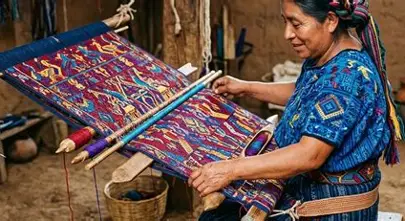
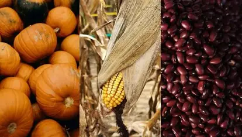

Costumbres, conocimientos y expresiones culturales que perduran.
Los pueblos mayas conservan diversas expresiones culturales. Algunas cambian entre comunidades, pero muchas reflejan la importancia de la familia, la naturaleza y la vida comunitaria.
Las fiestas comunitarias pueden incluir música, danza, ceremonias y actividades religiosas.

El tejido, la cerámica y otras técnicas artesanales transmiten conocimientos entre generaciones.

El cultivo del maíz, el frijol y la calabaza ha sido importante para numerosas comunidades mayas.

Los alimentos elaborados con maíz y otros ingredientes regionales forman parte de distintas cocinas mayas.
Las lenguas mayas continúan hablándose en distintas regiones. Su preservación es importante para transmitir historias, conocimientos, formas de expresión e identidad cultural.
La cultura maya no pertenece únicamente al pasado. Sus comunidades mantienen y transforman sus costumbres en la vida cotidiana.